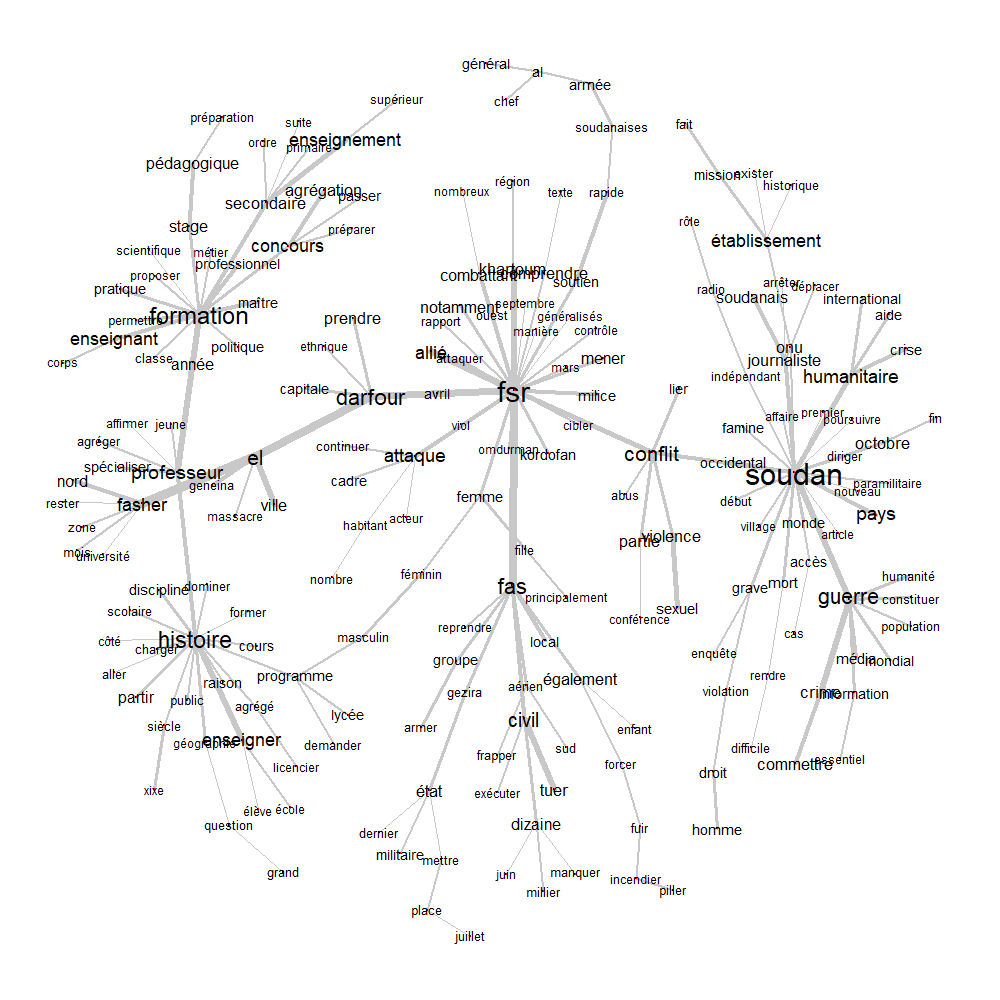
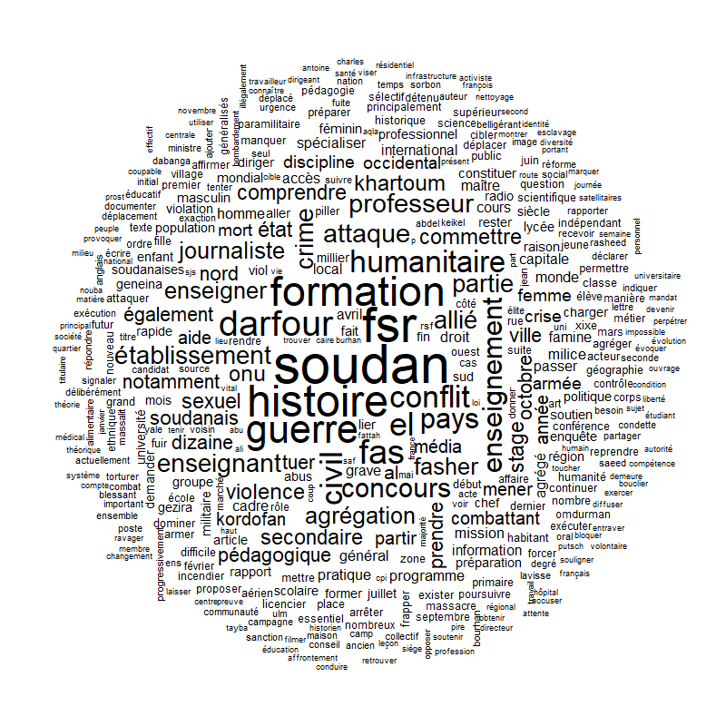

← Retour à l'accueil
Visualisation et data intelligence
Découvrez mes travaux en business intelligence et en analyse textuelle
Analyse immobilière et pipeline BI (DataImmo)
Conception de bout en bout d'un pipeline de données orienté business intelligence sur le marché immobilier. Ce projet structuré permet de transformer des données foncières brutes en indicateurs stratégiques clairs pour la prise de décision.
SQL
Power BI
Knime
Streamlit
Modélisation de données
Modélisation et architecture
- Création du dictionnaire de données et des tables relationnelles.
- Gestion de la géographie, des départements, des communes et des transactions foncières.
- Respect rigoureux des normes du Code Officiel Géographique (COG) de l'INSEE.
Base de données et requêtes
- Scripts SQL et structuration des tables foncières (immobilier).
- Documentation complète des requêtes d'analyse décisionnelle.
Rapport SQL & BDD (.pdf)
Pipeline et ETL (Knime)
- Automatisation des flux de nettoyage et de transformation sous Knime.
Fichier Knime (.knwf)
Application web (Streamlit)
- Application interactive déployée pour la restitution des indicateurs.
Tableau de bord interactif des performances commerciales
Problématique métier : Une entreprise souhaite disposer d'un tableau de bord interactif pour suivre ses performances commerciales en temps réel.
Objectif : Visualiser les KPI clés, analyser les tendances de ventes et évaluer les performances régionales pour une prise de décision rapide.
Power BI / Tableau
Data Visualization
Business Intelligence
Global Superstore Dataset
Compétences et réalisation
- Création de tableaux de bord interactifs avec filtres dynamiques (slicers).
- Visualisation avancée : graphiques temporels, cartographiques et combinés.
- Structuration et modélisation des données pour un suivi opérationnel fluide.
Voir le tableau de bord
Synthèse et impact
- Suivi en direct de la santé financière et du chiffre d'affaires global.
- Identification visuelle des zones géographiques sous-performantes et des tops produits.
- Outil d'aide à la décision stratégique destiné au management.
Analyse textuelle et NLP (Corpus médias et Soudan)
Traitement et analyse statistique textuelle approfondie d'un corpus médiatique complexe à l'aide du logiciel Iramuteq. L'objectif est d'extraire automatiquement les structures sémantiques, les réseaux de cooccurrences et les thématiques dominantes du discours de presse.
Iramuteq
NLP & Text Mining
Statistique Textuelle
Analyse Factorielle
Graphique de similarité
- Analyse des réseaux de cooccurrences et liens sémantiques forts du corpus[cite: 9].

Agrandir le graphique
Nuage de mots
- Visualisation synthétique des termes les plus fréquents de la presse[cite: 10].

Agrandir le nuage de mots